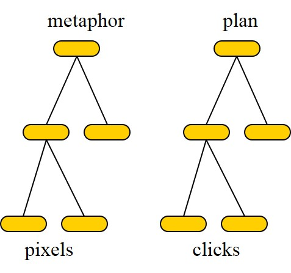
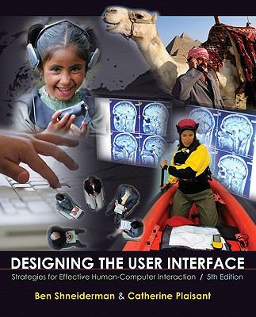

Slides
Related Materials


Lab 1 (due to Apr. 6) Lab 2 (due to May 12) Lab 3 (due to Jun. 8)
Images for Matlab Tutorial exercise 2
Instructor: Dr. Ying Shen (沈莹) (yingshen@tongji.edu.cn)
TA: Xiao LU(刘潇) (js_ilab@163.com); Lu YU(于露) (0628yulu@tongji.edu.cn)
Evaluation: Project (50 points), assignment (40 points), participation (10 points)
Scores for assignments
|
Slides |
Related Materials |
|
|
|
|
|
||
|
|
||
|
|
|
|  |
|
|
|
Lab 1 (due to Apr. 6) Lab 2 (due to May 12) Lab 3 (due to Jun. 8) |
Images for Matlab Tutorial exercise 2 |
1. Compress all files into a .rar or .zip file whose name is composed of student name and ID (such as "ID_name_project.zip").
2. All the documents you hand in should be in English.
Project contents
2. Kinect-based interactive systems;
3. Leap motion-based interactive systems;
4. 3D interactive systems: Compared with 2D systems, 3D systems offer a more user-friendly interface. In this project, you may develop a simple 3D interactive system, such as a 3D map or a game, etc. There are many development tools (such as Unity3D). You can use any of these tools to develop your system.
Program (25 points)
Report (35 points)
1. A brief description about your program (including the structures and modules of the program);
2. The implemented requirements;
3. Advantages and disadvantages of your program;
4. How to improve your program;
Marking scheme
Program: Each feature(function) 7'; Origninality 4' |
Report: 1. (10'); 2. (5'); 3.(10'); 4. (5'); in English (2'); Clarity (3') |
Grouping
刘潇 |
1. 尹屹凡 刘阳 陆思远 张华桢 2. 侯立 3. 夏佳昊 施峰 李尚霖 徐雯 嘎玛桑珠 4. 胡淦森 张兆龙 李威 朱方瑞 5. 许迪文 靳利文 李想 刘嘉琦 6. 尹嘉铭 储港 游惟雅 7. 吴正浩 徐铮 高淘沙 徐唱 8. 曹耘豪 王博 梁英杰 9. 潘安佶 方君怡 崔悦涵 |
于露 |
1. 陈冉冉 周鸿彦 郭梦晗 2. 李茂琦 3. 王瑷 孟龄 4. 胡贝妮 李沛卓 易思琦 5. 王逸鹏 张天人 颜子彦 杜为 6. 韦开仁 高云航 曾一帆 曾令云 7. 张赵宇 任兴银 8. 严熊白雪 李想 9. 彭国桓 赵敬 周志轩 |
沈莹 |
1. 李咏勋 张焱 刘焱 何杰平 2. 苏瑞 陈曦 3. 徐艺然 王�h 4. 李锐 宋伟 黄宗润 程俊翔 5. 王尘玉 陈子鉴 李萍萍 刘加桢 6. 彭嘉琦 张映艺 冯子亭 章皓明 7. 程之远 余杰东 刘骁 郑琦斌 8. 刘立冬 杨志超 张凯奇 9. 张尹嘉 张英浩 张志强 赵正 |
|  | Ben Shneiderman and Catherine Plaisant Designing the User Interface: Strategies for Effective Human-Computer Interaction Addison Wesley, 5th Ed, 2010 |
Created on: Feb. 11, 2015